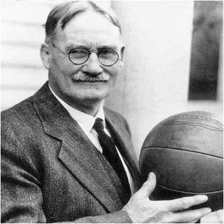
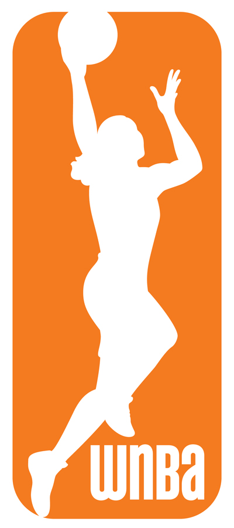

The Basketball Imbalance:
Men's Basketball vs. Women's Basketball
Brief History

1891: James Naismith invented the game of basketball.
Women's Basketball
- 1892: Senda Berenson organized the first women's team at Smith College.
- 1901: Spalding established women's basketball rules, which Senda Berenson edited.
- 1955: The Pan-American games included women's basketball.
- 1972: Title IX passed, and federally funded schools had to fund women's sports.
- 1976: Women's basketball became an olympic sport
- 1981: The NCAA announced women's basketball tournaments. The first women's Final Four was held.
- 1996: The NBA established the WNBA.
- 1997: The first WNBA game was played
Men's Basketball
- 1892: The first public game was played at the School for Christian Workers.
- 1895: Minnesota State School of Agriculture and Hamilton College played the first intercollegiate game.
- 1936: Basketball became an official olympic sport. The Olympics were held in Berlin, Germany.
- 1940: The first televised basketball games were played
- 1946: The Basketball Association of America(BAA) was founded.
- 1949: Six teams from the NBL joined the BAA and formed the National Basketball Assocation (NBA).
Style of Play
Women's Basketball
- Women's games are typically lower scoring (with the exception of a few teams such as UConn).
- Very few women dunk. There are a couple who dunk like Lisa Leslie and Brittney Griner.
- The game is a little bit quicker in college because of the 30-second shot clock and four 10-minute quarters.
Men's Basketball
- Games are usually higher scoring, averaging about five more points per game in college basketball.
- A lot more dunking.
- The men's college game consists of a 35-second shot clock and two 20-minute halves.
Popularity
Women's Basketball
- Women played as long as men, but women's basketball didn't become popular until the mid-80s.
- There are a few women's basketball programs that are more or just as popular as the men's college basketball program. Tennessee women's team regularly sells out and draws bigger crowds than the men's team. Both UConn's women's and men's teams have sell-out crowds.
Men's Basketball
- College and professional basketball have been mainstream in the United States since the 40s.
- Attendance and TV ratings are much more higher than women's basketbal. The Ohio State men's team averages more than 15,000 people in attendance per game whereas the women average about 3,510 people per game (year).
Going Pro

WNBA
- In 2014, the minimum salary in the WNBA was $37,940.
- The rookie slaray is $34,500.
- A veteran with over 3 years experience in the league makes a minimum of $50,000.
- In 2012, the max salary was $105,000.
- The average overseas salary is $72,000.
- A seven-month contract starts at $40,000 overseas
- A key player can make about $600,000 plus incentives overseas.
- Few players, such as Candace Parker and Diana Taurasi, make $1 million.
NBA
- In the 2015-16 season, the rookie minimum salary is $523,093.
- With three years of exprience in the league, a player makes $981,348.
- Top 3 salaries (2015-16):
- Kobe Bryant: $25,000,000
- Joe Johnson: $24,894,863
- LeBron James: $22,970,500
What did you learn?
Do you know the differences between men's and women's basketball.